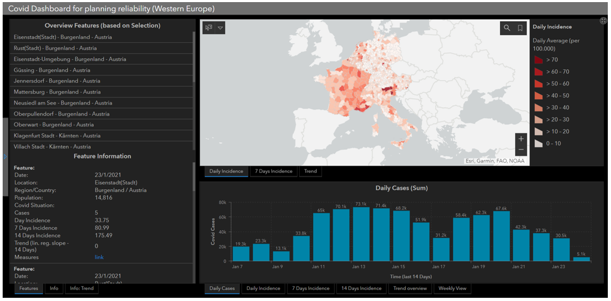
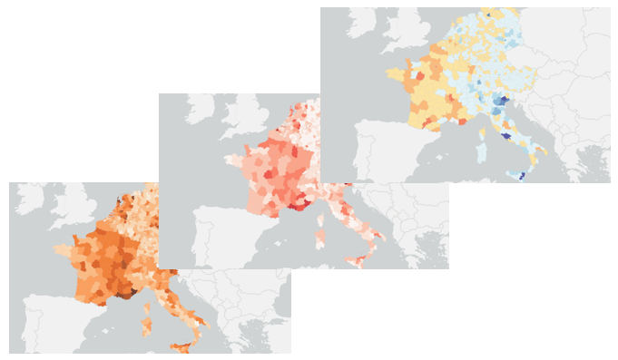

The project focused on developing a transnational Covid-19 dashboard for the cultural, tourism, and entertainment sectors, aimed at providing an interactive and up-to-date overview of the pandemic situation across multiple countries. The dashboard was designed to present detailed, small-scale data, allowing users to compare Covid-19 statistics between districts, regions, and countries.
Data integration posed some challenges due to varying data quality, resolution, and geometry differences across countries. Despite this, the dashboard was able to aggregate and present the data. Trend analysis was performed using linear regression, although the project recognized that the pandemic's exponential nature might not align with linear modeling methods. The dashboard also allowed for user interaction, providing a dynamic interface to compare data between regions, but the timeliness of the data varied, with some countries being up to six days behind others. This created potential inaccuracies in daily views, making it crucial for users to interpret the data with caution.
The platform was built using the ArcGIS framework, facilitating map-based visualization and presentation of data. However, integration with external websites and additional data sources proved to be difficult. Initially, there were plans to include a traffic light system for risk assessment at the district level, but this was not feasible due to differing political definitions of risk across countries. Furthermore, the dashboard lacked sufficient built-in guidance or a tutorial feature, which led to a somewhat unintuitive user experience, especially for those unfamiliar with the tool.


In conclusion, while the dashboard met its design objectives and provided valuable functionality for users, it faced challenges related to data consistency, timeliness, and user guidance. Future iterations could focus on improving data harmonization, enhancing user support features, and addressing the limitations of the current platform.